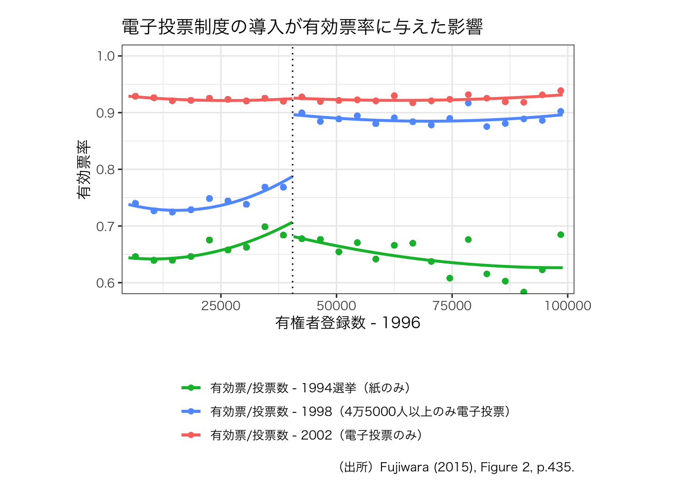
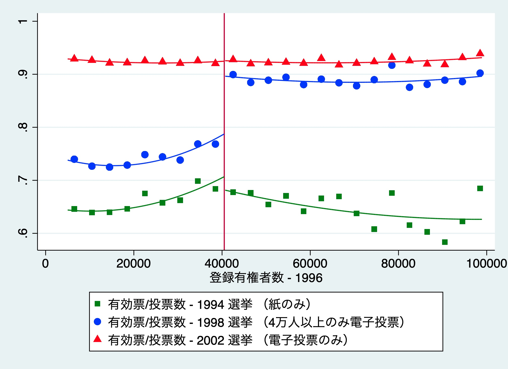

第9章 政策評価モデル
実証例が少なくて寂しいですね．第2版で増えることを祈りましょう．
図 9-5
もっと良い描き方がありそうです．あったら，教えてください．
library(tidyverse)
munic1 <- haven::read_dta("munic.dta")
munic1$bin_voters96 <- cut(munic1$voters96,
breaks = c(seq(500, 200000, 4000)),
labels = c(seq(2500, 198000, 4000)))
munic2 <- munic1 %>%
select(voters96, bin_voters96, r_util94, r_util98, r_util02) %>%
group_by(bin_voters96) %>%
mutate(bin_util94 = mean(r_util94, na.rm = T),
bin_util98 = mean(r_util98, na.rm = T),
bin_util02 = mean(r_util02, na.rm = T),
)
munic4plot <- munic2 %>%
select(r_util94, r_util98, r_util02, voters96,
bin_voters96, bin_util94, bin_util98, bin_util02) %>%
pivot_longer(!c(r_util94, r_util98, r_util02, voters96, bin_voters96),
names_to = "year",
values_to = "turnout")
munic4plot$year <- factor(munic4plot$year, levels = c("bin_util94", "bin_util98", "bin_util02"))
ggplot(munic4plot, aes(x = as.integer(as.character(bin_voters96)),
y = turnout,
colour = year)) +
geom_point() +
geom_smooth(aes(x = voters96, y = r_util94, colour = "bin_util94"),
data = subset(munic4plot, 5000 < voters96 & voters96 < 40500),
method = "lm", formula = y ~ x + I(x^2), se = F) +
geom_smooth(aes(x = voters96, y = r_util94, colour = "bin_util94"),
data = subset(munic4plot, 40500 < voters96 & voters96 < 100000),
method = "lm", formula = y ~ x + I(x^2), se = F) +
geom_smooth(aes(x = voters96, y = r_util98, colour = "bin_util98"),
data = subset(munic4plot, 5000 < voters96 & voters96 < 40500),
method = "lm", formula = y ~ x + I(x^2), se = F) +
geom_smooth(aes(x = voters96, y = r_util98, colour = "bin_util98"),
data = subset(munic4plot, 40500 < voters96 & voters96 < 100000),
method = "lm", formula = y ~ x + I(x^2), se = F) +
geom_smooth(aes(x = voters96, y = r_util02, colour = "bin_util02"),
data = subset(munic4plot, 5000 < voters96 & voters96 < 40500),
method = "lm", formula = y ~ x + I(x^2), se = F) +
geom_smooth(aes(x = voters96, y = r_util02, colour = "bin_util02"),
data = subset(munic4plot, 40500 < voters96 & voters96 < 100000),
method = "lm", formula = y ~ x + I(x^2), se = F) +
geom_vline(xintercept = 40500, linetype = "dotted") +
coord_cartesian(
xlim = c(8000, 97000),
ylim = c(0.6, 1)) +
xlab("有権者登録数 - 1996") +
ylab("有効票率") +
theme_bw(base_family = "HiraKakuPro-W3") +
scale_colour_manual(values = c("#00BA38", "#619cff", "#f8766d"),
name = "",
labels = c("有効票/投票数 - 1994選挙（紙のみ）",
"有効票/投票数 - 1998（4万5000人以上のみ電子投票）",
"有効票/投票数 - 2002（電子投票のみ）")) +
theme(plot.margin = margin(0.5, 3, 0.5, 2, "cm"),
legend.position = "bottom",
legend.direction = "vertical") +
labs(title = "電子投票制度の導入が有効票率に与えた影響",
caption = "（出所）Fujiwara (2015), Figure 2, p.435.")
ちなみに，有斐閣のウェブサイトで公開されているStataのdoファイルを実行すると，次のグラフが出力されます．
